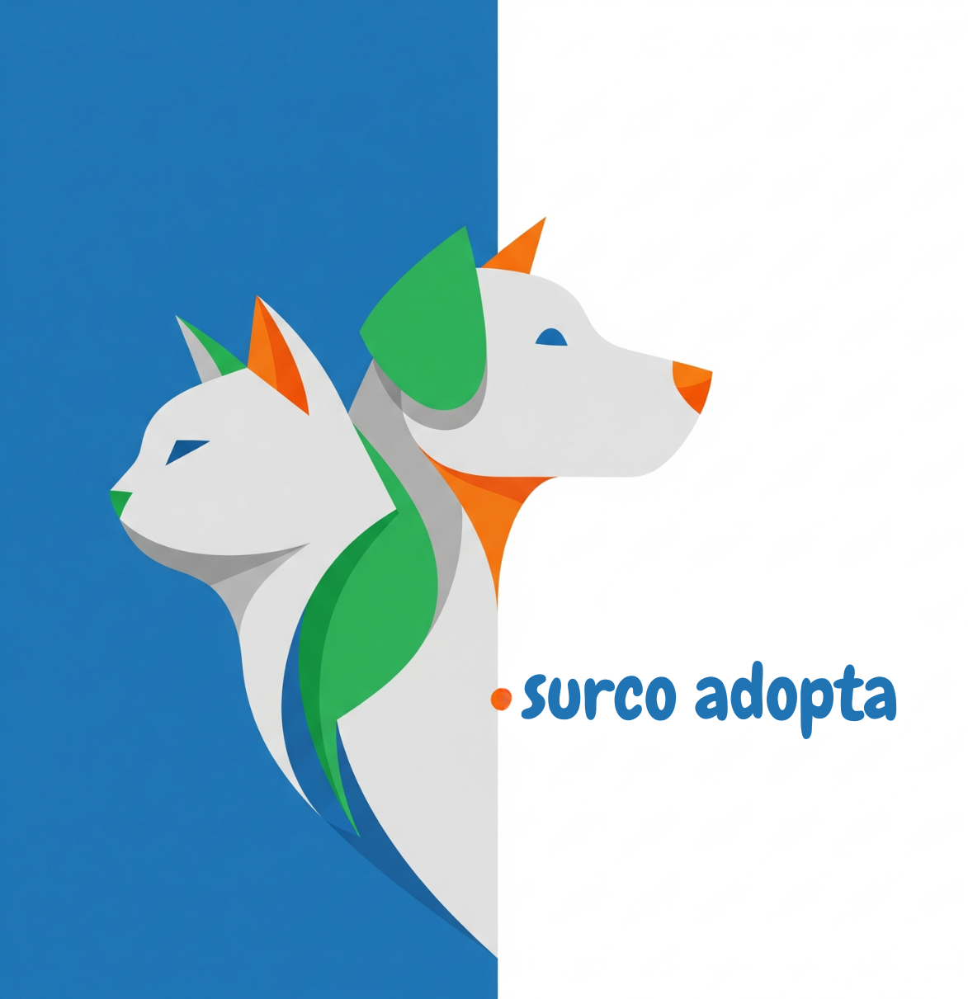

Pasa el cursor sobre las tarjetas para ver más información



Peludos
React • Firebase • CRUD
Peludos - Adopción
Plataforma completa para adopción de mascotas. Sistema CRUD con Firebase, filtros de búsqueda, gestión de perfiles de animales y formularios de adopción.
EU Emissions
Python • Django • Charts.js
EU Emissions Dashboard
Dashboard interactivo para visualización de datos de emisiones de CO2 en Europa. Gráficos dinámicos, filtros por país y año, desarrollado con Django y Charts.js.